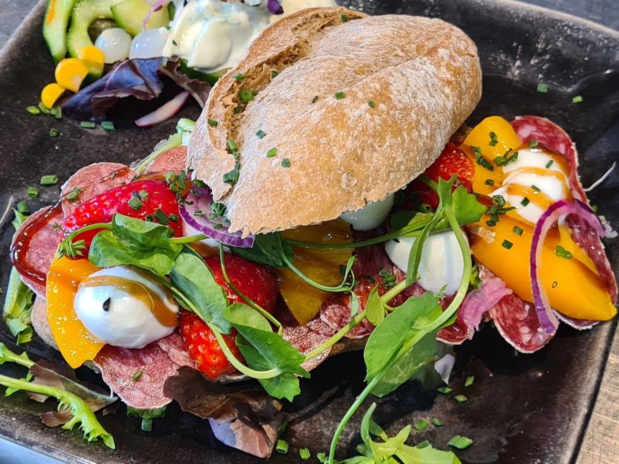
Lunch
Ambachtelijke broodjes, soepen, uitsmijters, salades en het twaalfuurtje.
11:30 – 15:00vanaf € 9
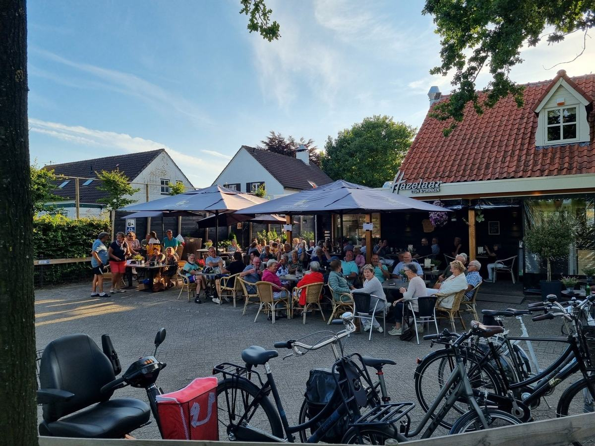
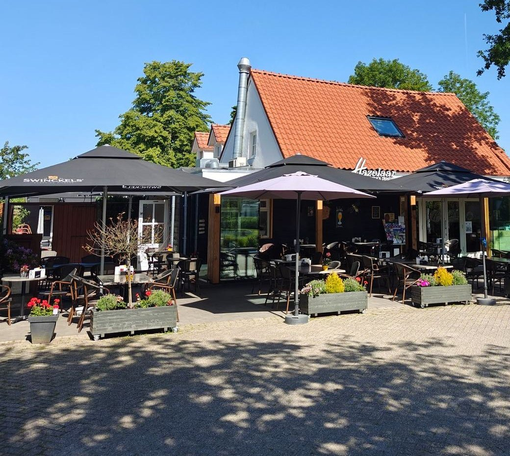
Lunch, diner of een borrel op het terras, in een ongedwongen sfeer. Woensdag t/m zondag vanaf 10:30.
Binnen in de brasserie, op het voor- of zijterras of onder de verwarmde veranda.

Ambachtelijke broodjes, soepen, uitsmijters, salades en het twaalfuurtje.
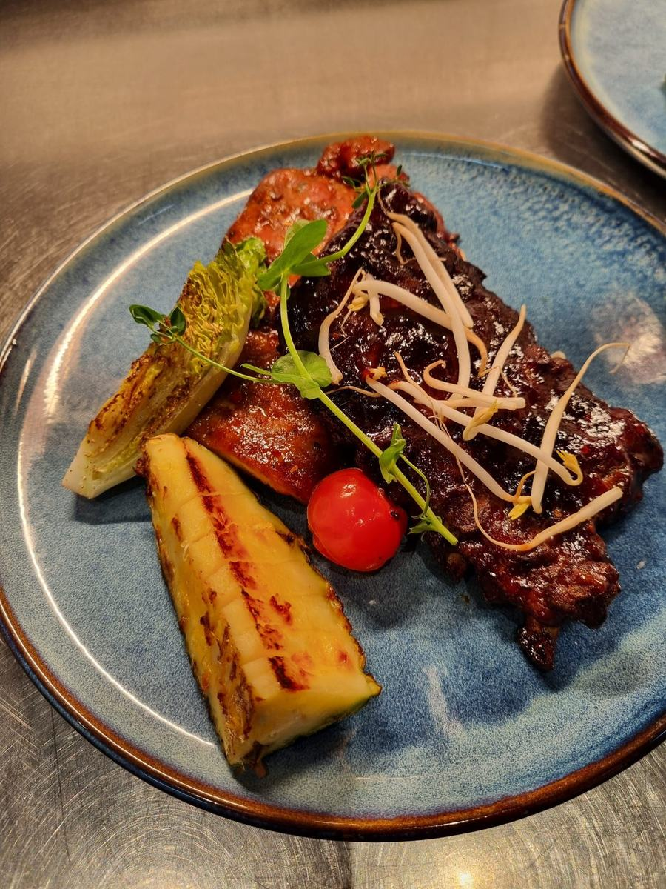
Diamanthaas, kalfsentrecote, trio van vis en elke week vlees en vis van het moment.
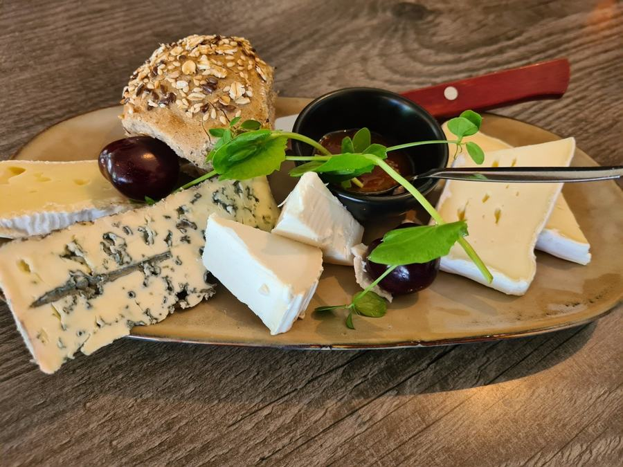
Bourgondische bitterballen, borrelplanken en een goed glas op het terras.
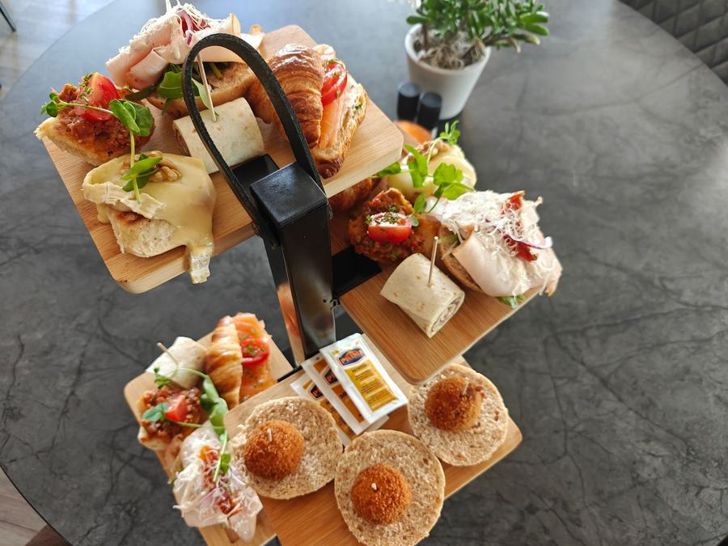
High tea op de etagère, ook voor groepen en om iets te vieren.
De Hazelaar ligt in het buitengebied van Heerle, aan twee fietsknooppunten tussen Roosendaal, Bergen op Zoom en Steenbergen.
Zit lekker in de zon op het voor- of zijterras, of onder de houten overkapping van de verwarmde veranda. Voor e-bikes is er een oplaadpunt, zodat u na uw pitstop met een volle accu verder kunt.
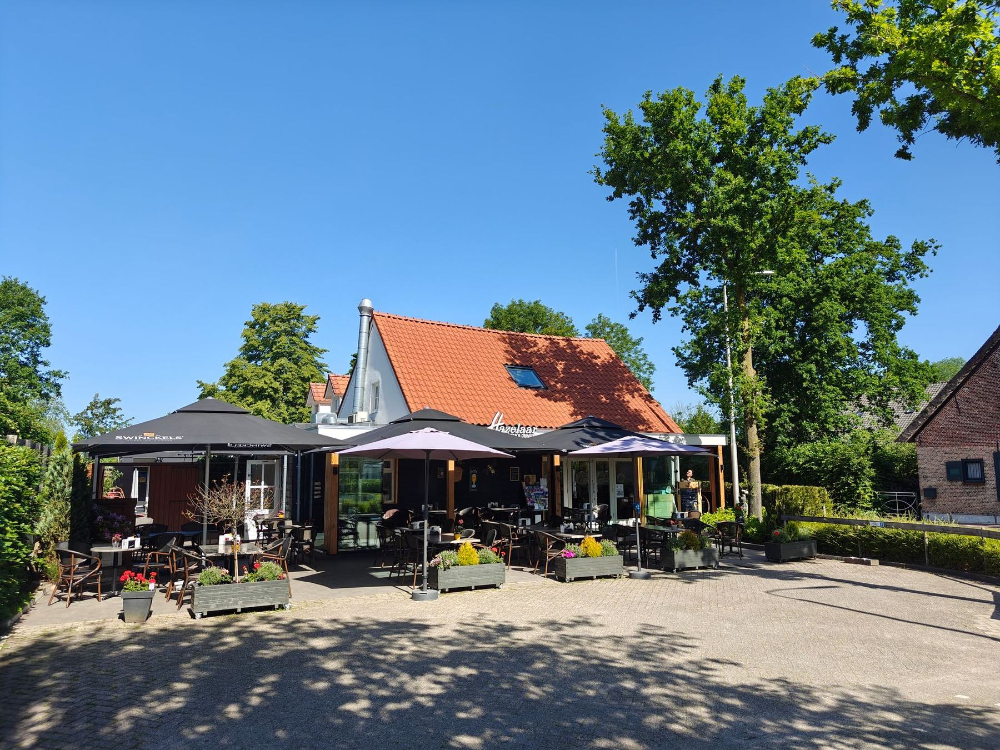
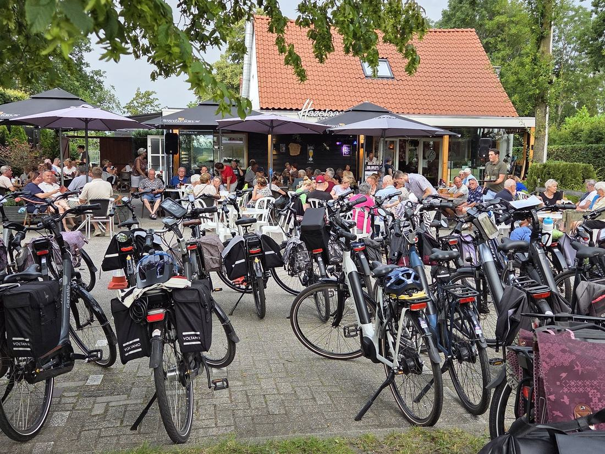
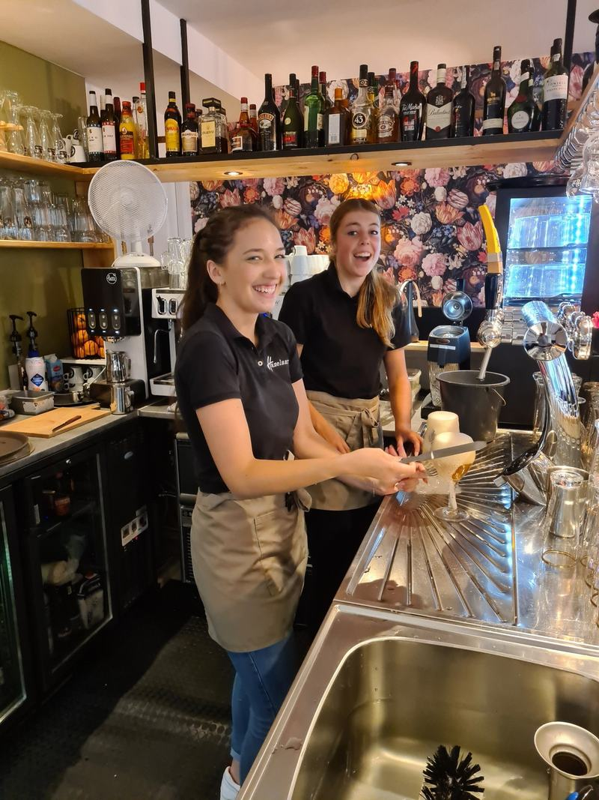
Klein of groot gezelschap: bij de Hazelaar kan er veel. Vraag vrijblijvend naar de mogelijkheden.
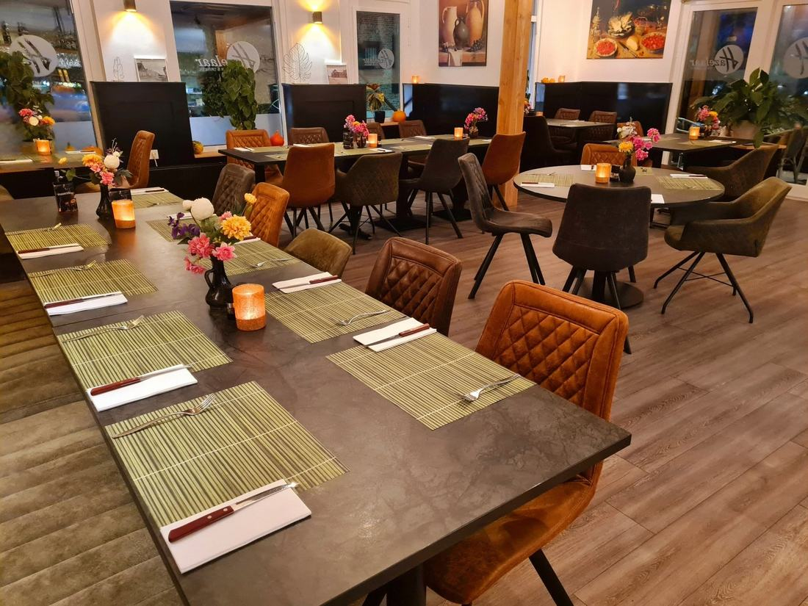
Voor gezelschappen vanaf 10 personen maken we graag een menusuggestie op maat. Specifieke wensen? Dan kijken we samen naar de mogelijkheden.
“Het personeel is ontzettend vriendelijk en zorgt ervoor dat je je meteen welkom voelt. Het eten is altijd van topkwaliteit, met een menukaart die regelmatig wisselt.”
Thomas Feenstrajanuari 2025“De eigenaren lopen zelf rond om ervoor te zorgen dat alle gasten het optimaal naar hun zin hebben. Persoonlijkheid en genieten ten top.”
Dennis de Bruijnjuni 2024“Gezellige plaats om te lunchen. Vriendelijke bediening. Heerlijke schotel met vissoep en brood met garnalenkroket, zalm en surimi salade genomen. Voor herhaling vatbaar.”
Ineke van der Lindenoktober 2024“Een heel intiem restaurant op de noordelijke rand van Heerle. Zeer vriendelijke ontvangst. […] Alles was een heerlijke ervaring.”
Peter Weijmansaugustus 2024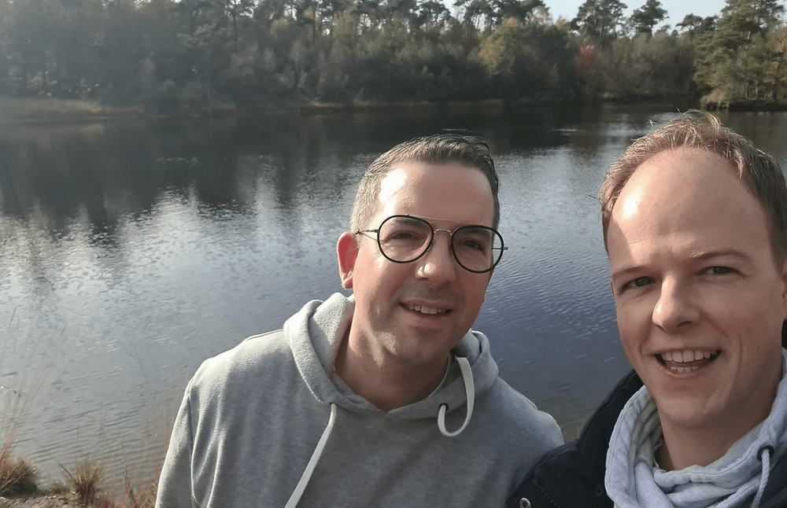
Sinds februari 2022 runnen Bas de Beer en Jordi van Kouteren de Hazelaar. Allebei komen ze van de hotelschool en hebben ze vele draaiuren in de horeca gemaakt, de laatste jaren samen in hun eigen zaak de Fendertse Hoeve in Fijnaart.
Het voormalige bruin café is helemaal verbouwd tot een brasserie met een warme, huiselijke sfeer. Voor ons is het belangrijk dat iedereen zich hier lekker thuis voelt, of u nu met z'n tweeën komt of met een groot gezelschap.
Echte horecamens en zin om ons jonge, enthousiaste team aan te sturen? We horen graag van je.
Reserveer voor lunch of diner om teleurstelling te voorkomen. U krijgt van ons een bevestiging per mail.
Dit is een voorbeeldontwerp. In de echte site komt uw reservering direct bij de Hazelaar binnen.
Een lekkere lunch na een fietstocht of gewoon tussendoor. Elke week staat er ook een lunchgerecht van de week op de kaart.
Bourgondische kroket, tomatensoepje, carpaccio, ham/kaas met gebakken eitje
Garnalenkroket, gerookte zalm, krabsalade en vissoep
Met truffeldressing en Parmezaanse kaas
Hoofdgerechten serveren we met bijpassende aardappel, groenten, garnituur en mayonaise. Vraag ook naar vlees en vis van het moment.
Optie surf & turf met 5 gamba's
Biefstuk, varkenshaas, kipfilet en souvlakispies
Met rode wijn-tijmsaus
Met vissaus
Met gebakken ui, kaas en ei
Even zitten op het terras met een drankje en wat lekkers erbij. Naast de hapjes hebben we ook borrelplanken en cocktails.
8 stuks
8 stuks
Met chilisaus, 8 stuks
Naast lunch en diner verzorgen we ook high tea's, voor kleine en grote gezelschappen.
Wilt u een high tea reserveren of iets te vieren met een groep? Vraag vrijblijvend naar de mogelijkheden.